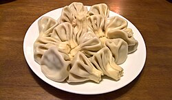

ხინკალი
ხინკლის დამზადება სათავეს იღებს აღმოსავლეთ საქართველოს მთიან რეგიონებში. მისი გამოგონების პატივი მიეწერებათ როგორც მოხევეებს, ასევე ფშავლებს, მთიულებსა და ხევსურებს.[1] უძველესი წესით ხინკალი მზადდება მსხვილად დაკეპილი ხორცით. მთიან რაიონებში ასეთი მეთოდით ხინკალს დღემდე ამზადებენ
